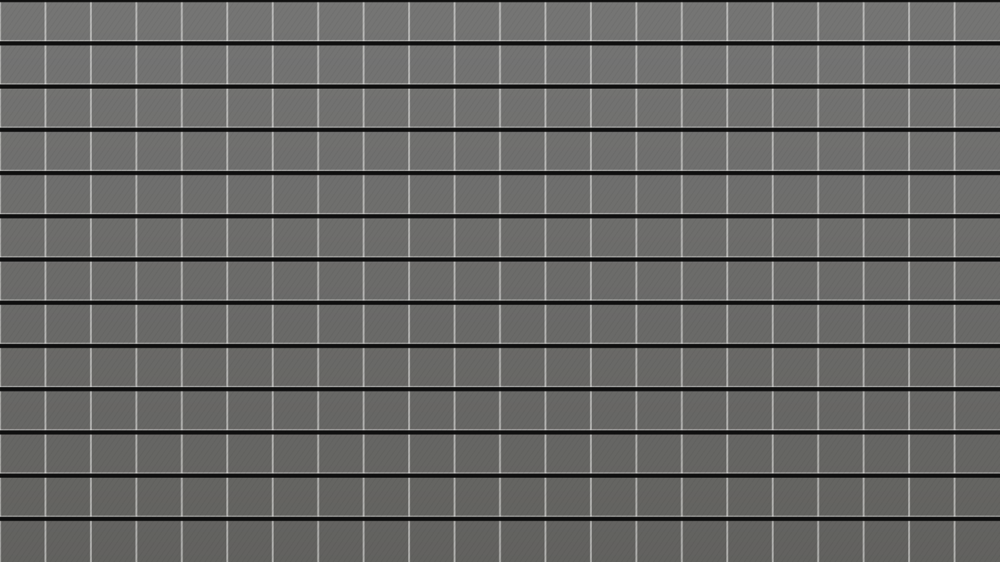

Ir. Rangga Wibisono
Founder & President Director29 years in construction. Sits on the AKI national safety standards working group.
P-02 About RKU
Rangga Karya Utama began in 2008 with nine people and one excavator on a warehouse job in Bekasi. Today: 412 direct staff, six offices, an owned plant fleet, and 240 completed sites.
01 Story
Pak Rangga Wibisono spent eleven years as a site engineer before he started the company, and the thing he wanted to fix was simple: contractors who disappear at hand-over. So the firm was built around the parts of a project most contractors treat as someone else's problem — commissioning, as-builts, defect response, and the training your facilities team actually needs.
The second decision was to own the plant. Renting is cheaper on paper until the month you need a crane and the market does not have one. Six tower cranes, fourteen excavators, two batching plants, and 18,000 m² of formwork sit on our balance sheet — which is why our programmes hold when someone else's supply chain does not.
We stayed general contractors on purpose. No property development, no concessions, no side businesses that compete with our own clients for attention. One contractor, from ground-breaking to hand-over.

02 Milestones
03 Team
Every project gets a named project manager and a named QHSE lead for its full duration. They do not rotate off mid-build.
29 years in construction. Sits on the AKI national safety standards working group.
Runs the six site teams and the plant fleet. Previously 9 years in industrial project management.
Owns the safety file company-wide. Ten years as an auditor before joining RKU in 2017.
Prices every tender that leaves the building. 14 years across civil and building works.
04 Values
If a date is in the contract, it is in the plan, and the plan is published weekly. When something slips, you hear it from us before you see it on site.
Safety is a scheduling decision, not a poster. Work that cannot be done safely at the pace requested gets re-sequenced, not rushed.
Commissioned, tested, documented, and trained. A short punch list is the point of the last eight weeks, not an accident.
K-03 Safety record
Rates are calculated per 1,000,000 work hours, self-reported to Kemnaker and verified in our annual SMK3 audit.
Programme What that record is built on
2019: one lost-time incident, a fractured wrist during formwork strike-out at Karawang. Root cause was a sequencing error in our method statement. The revised strike-out procedure has been standard on every site since.
K-01 Certifications
Current certificates, registration grades, and association memberships. Copies of all documents ship with every tender submission.
Audited annually by TÜV. Covers design coordination, procurement, and site execution.
Valid to 03 / 2028Whole-company scope including subcontracted trades and plant operators.
Valid to 11 / 2027Waste segregation, dewatering control, and noise limits enforced on every site.
Valid to 06 / 2027Gold-level assessment, 168 of 166 criteria met at last Kemnaker audit.
Valid to 09 / 2027Unlimited project value. Qualified for BG004, BS001, SI003, MK001 sub-classifications.
Valid to 02 / 2029Awarded for 4.1 million consecutive work hours without a lost-time incident.
Issued 01 / 2026Two Greenship Gold deliveries; four accredited Greenship Associates on staff.
Member since 2019Full member. Board seat on the national safety standards working group.
Member since 2011K-07 Awards & press
Konstruksi IndonesiaNov 2024
“The mezzanine variation arrived at week 14 and the hand-over date never moved. That is the whole case study.”Read the project
Bisnis PropertiMar 2025
“One of the few mid-size contractors in Java that still owns its plant — and it shows in their programmes.”See the fleet
Jakarta Infrastructure ReviewAug 2025
“RKU publishes its own incident statistics monthly. Almost nobody in this market does that.”See the safety record
Straits Build JournalFeb 2026
“Their Johor entry was the quietest cross-border expansion of the year — and the only one delivered on programme.”Current sites
The fastest way to judge a contractor is to walk one of their sites unannounced. We'll arrange it.